I went to Tuscan, Arizona!!! One might ask, what exactly is in Arizona? I have an answer for you!
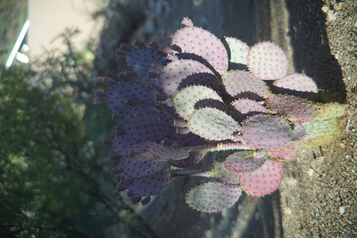We stayed at an airbnb, which I have never done before and wasn't excited to start! It was strange. The owner had covered the entire house in instructions and attempted to theme it to Toy Story in arguably unrelated Target decor. At least it was clean.
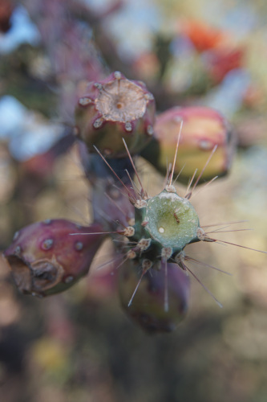I was amazed at the sheer number of houses. The city was very flat and wide. Not a single house had a lawn and everything was dirt, cactus, and rocks. From the plane I really couldn't see many buildings that didn't look residential. Tucsan is a strange place.
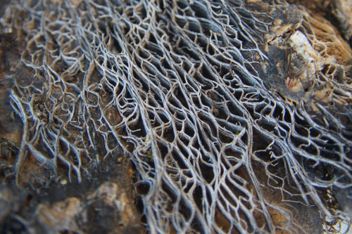Also there was like no shopping?! I did find a selection of Texas Pete on the shelf at Safeway, but I couldn't bring it home without a checked bag ;a; I saw two Goodwills on the way back to the airport, but it was too late to visit them.
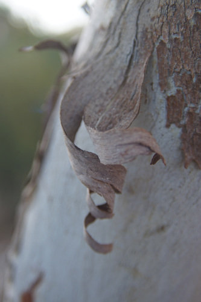I actually dragged my CIMKO macro zoom lens on this trip. It was fun to use it! It (along with my camera) doesn't fit in my camera bag so it's a massive pain to transport.
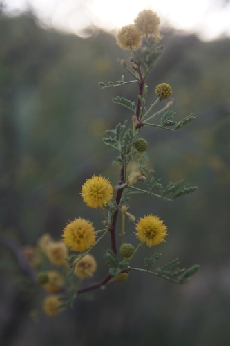I got to do some shopping in the Seattle area though! You know what they say... girls be shopping...
[no photo!?]
Never heard of them but I can't pass up an old JPop CD. It's pretty fun.
My best friend found it for me! She knows me!
More than the original price! I would cry if I broke another set ;_;
We went down to the massive bookstore in Tacoma. I found a shelf of BL but all of it was 18+ except one, but that one was a volume 2. Where's the SFW BL at??? There was a furry game store nearby that I bought some dumb games at.
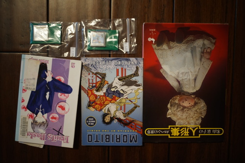library rebind
Can't stop buying japanese pet simulators
My gaggle of Mature Anime Enjoyers (including Kohi) made the pilgramage to downtown Seattle for even more shopping. Here is my haul!! and also Ryan's
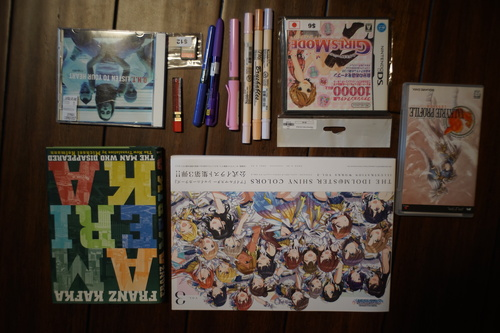For hors!
impulse buy
I can't remember if I complained here already, but both my preppies broke. Neither of them would write consistently and then their bodies cracked so they couldn't be screwed on fully. They are being held together by washi tape. I was pissed and felt the need to replace them immediately when it happened a few months ago.
I really wasn't all about LAMY's Safari, mostly because the default pink is too bold. Three really cute colors were released for spring and I was going to ask Ryan to buy me LAMY's limited light rose Safari for Christmas. I saw one in Kinokuniya and it was cute! Then I went to the UW bookstore and it was cheaper than jetpens due to a 25% off sale. Sold.... I went with a F because they didn't have an EF. It's definitely my boldest pen. I was really surprised at how smooth the nib is. I hope it holds up! Don't buy a preppy.
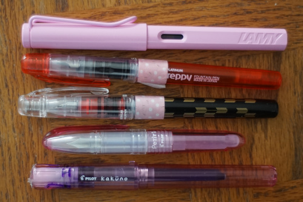I made a shopping list before I left and... only found 1 item on the list! No one had the copic nibs I wanted, foam erasers, or the daiso neodymium magnets the Japanese have been chatting about on Tsuittaa. I did find the ZIG Brushables that hors recommended though! I found 2 colors I wanted at the art store... then found them all cheaper at UW bookstore!! The UW bookstore really should be my first stop. Forget Kinokuniya!!!
I enjoyed many yard buns on my trip! Check out this baby yard bun!
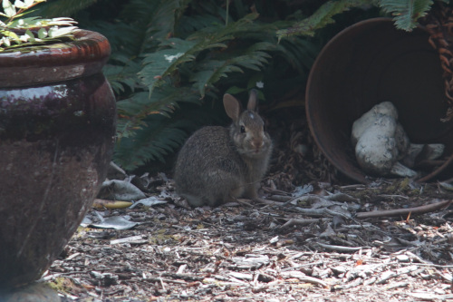 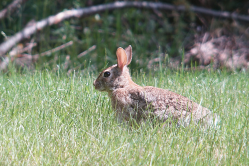I looked out the window to check on my yard bun the other evening and found something much more exciting! A very delicious looking deer! He would make a lovely steak.
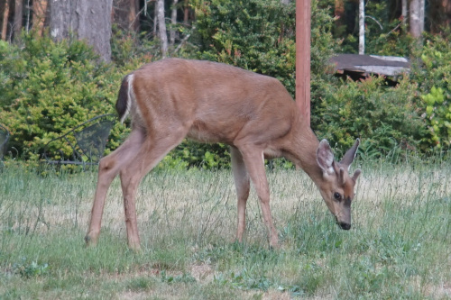I think I am done with very fun TSA pat downs for a while! 4 in 2 weeks was too much. I never want to get on a plane again. Also my kakuno leaked on the plane! WOW RUDE!!
and now, back home
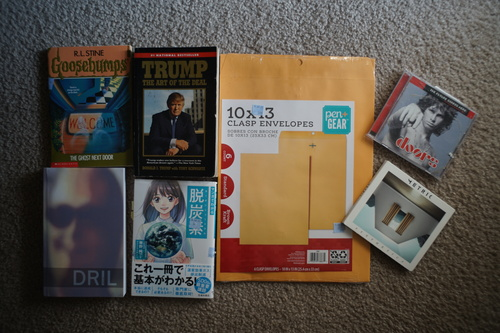Found one of those rare copies without my face on it.
Ryan already had it but I couldn't just leave it.
Bad decisions?!
I'm not really digging it. Sorry. Probably won't listen to it again.